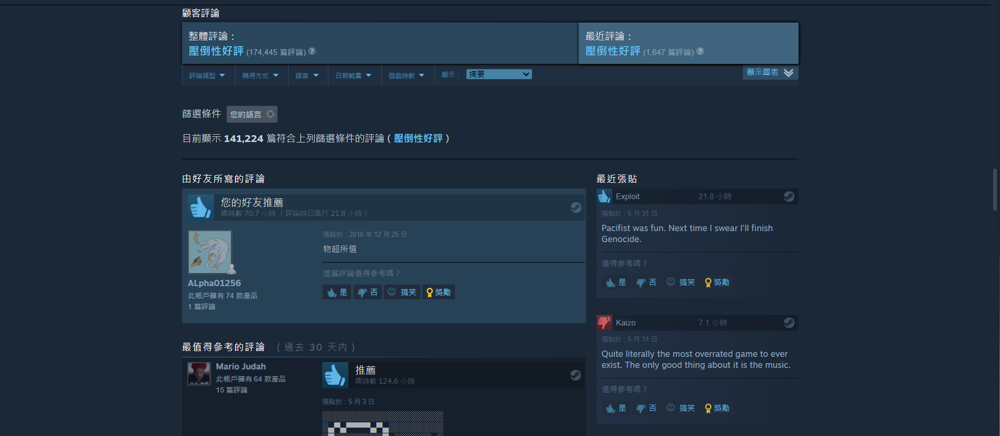

《Undertale》（又譯作「地域傳說」、「傳說之下」、「地下傳說」）
是托比·福克斯（Toby Fox，id為tobyfox）獨立開發、發行的一款角色扮演遊戲。
在遊戲內玩家要控制一位掉入地底世界，被魔法屏障隔開的人類孩子。
玩家的任務是要讓人類孩子回到地表，探索充滿城鎮和洞穴的地下世界，並在旅途中解開無數的謎題。
遊戲其特色在於特殊的戰鬥系統，玩家必須閃避對手的彈幕攻擊，可以選擇仁慈（mercy）或行動（act）或攻擊（fight）他們。這些選擇會影響遊戲後面的對話、人物、故事和結局。
該遊戲在上市後備受評論家的好評，並稱讚遊戲中的幽默元素、直觀的戰鬥系統、音樂獨創性以及劇情中與角色深刻的情感連結。最終遊戲銷售超過一百萬份，被提名多項榮譽和獎項提名。